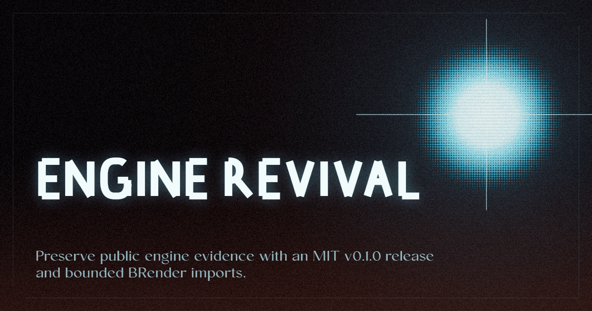

Retro Engine
Interactive browser studio for owned pixel, shader, palette, and CRT experiments.
Maintain public-safe metadata, schemas, validators, target matrices, reproduction recipes, evidence packets, and reports for reviving historical game engines, SDKs, rendering libraries, CGI toolkits, and studio technology.
Engine Revival v0.1.0 is public at release v0.1.0, with main pinned to 0af6d527860a63c418b5775dc0efe9ba89557604. The MIT repo boundary is distinct from imported AGPL-covered BRender media and receipts.

Interactive browser studio for owned pixel, shader, palette, and CRT experiments.
Public MIT preservation spine. It records local 12-target materializer scope and imported release evidence without merging their claims.
A distinct BRender restoration route. Generic Retro Engine output is not BRender evidence.
Engine Revival public main and release v0.1.0 both resolve to 0af6d527860a63c418b5775dc0efe9ba89557604. The repository is MIT. Its page records BRender Archival as an imported external 21-target release, not as output from the local 12-target materializer.
Does not prove: product parity, adoption, performance, legal completeness, or that local 12-target scaffold output equals the external 21-target BRender release.
Retro Engine is a companion renderer, not BRender proof. Generic Retro Engine output is not BRender evidence. Engine Revival preserves the evidence spine and imported AGPL-covered BRender media and receipts while keeping the MIT repo boundary clear.
These links connect adjacent graphics, preservation, and rendering projects. They do not assert that one owns or contains another.
Responsive contract: this page is static without JavaScript, keeps readable flow at 320px and 390px widths, and must remain usable at 400% zoom with print, forced-colors, text-spacing, focus, and reduced-motion modes.